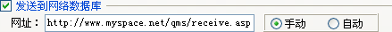
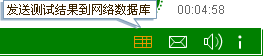
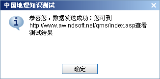
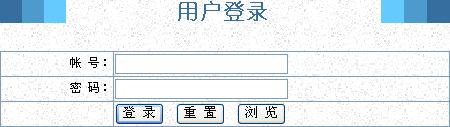

| 数据收集 - 网络数据库 |
|
网络数据库接收设置部分如下图所示：  其中参数所所表示意义，在属性设置->结果设置里已叙述过，这里说明一下其工作流程。 当您勾选[发送到网络数据库]选项时，你就使用了试题大师所提供的测试结果网络数据库接收功能。需要注意的是，数据接收的两个选项，手动模式与自动模式。 Ø 手动模式 当您选择了[手动]模式，请确保在播放器的播放器设置中勾选[数据发送]及其上级，这样测试者在做完测试题后，会在工具栏右上角显示一个数据发送按钮，如下图示；点击它后会执行测试数据发送到网络的操作，试题会根据是否发送成功，会给出相应提示；其结果可能如下图所示：   Ø 自动模式 而您若是选择了[自动]模式测试者做完试题后，试题会自动向您设定的数据接收网址发送测试结果数据。它不会显示发送按钮，也不论是否发送成功，均不会给测试者任何提示。 Ø 工作原理 网络数据接收用到了Web数据库系统。其原理为测试者做完题后，若有数据提交操作，则测试结果被发送到数据接收页面，此页面对试题所发送的数据进行分析归类，存于对应的数据中，因此此功能需要测试者做题时电脑能联上网，推荐把试题发布在Web网页上给测试者做题。 此功能所用到的是Web数据库系统，在试题大师安装目录下的samples下面，有asp及php的例子，您若是有条件，可以参照它来搭建您自己的数据收集系统，此系统支持测试结果的收集 与管理、统计、管理员信息及测试者帐号修改等功能，也支持属性设置->试题保护的[密码保护]之[网页验证]功能。 提示：若您没有搭建自己的数据收集系统，可用[http://www.awindsoft.net/qms/]来实现此功能 ；若您是试题大师注册用户，可用注册邮件+注册码登录。 Ø 结果显示 对此功能，我们设计有asp及php接收两个例子，请在试题大师安装目录下的samples文件夹下找到它们；下面对其工作原理及数据结果显示进行说明。 1．登录页面 其截图如下所示：  这里有两种可能的帐号：系统管理员、管理员，而[浏览]功能是给试用者提供的功能，其间差别如下： 系统管理员：系统中唯一的系统管理员，其帐号为admin，初始密码为123456，它拥有系统的全部权限。 管理员：每个试题大师的注册帐号，都是一个初始的管理员帐号。若您已是试题大师的注册用户，且已使用了网络数据收集功能，则当测试者有信息传入数据收集系统时，您就可以以注册帐号登录系统。一个管理员账号，只能看到本管理员所出题的测试结果信息，只能修改自己的管理员密码，管理属于自己出的题的用户信息。 浏览功能：此功能只提供浏览测试结果功能。这里能看到的测试结果，只有试题大师未注册版测试者所提交的数据，这些数据是不受保护的。
2． 导航页面 |